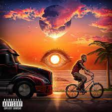
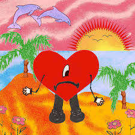

La vida de Benito Antonio Martínez Ocasio conocido como (Bad Bunny)
Datos curioso
*Romper records ya es costumbre para Bad Bunny.
El cantante puertorriqueño es el más escuchado del mundo y
en un día logró 183 millones de reproducciones, superando a Drake,
cuyo récord era de 176,8 millones.
*Su gira se convirtió en la más lucrativa a nivel mundial, con ingresos promedio de más de 9,8 millones de
dólares
y su último album "Un verano sin ti"
pasa su semana 13 siendo el número uno de la lista de Billboard 200.
*Aunque creció en un hogar feliz, el artista reiteró en varias entrevistas que su familia realmente no tenía
nada.
No recibió lecciones de canto ni nada lujoso,
solo cantaba en la iglesia los domingos y después de la escuela los días de semana.
*Sus inicios en la música: Su artista favorito era Daddy Yankee,
en quien se inspiró para empezar a escribir y a grabar sus propias canciones.
Comenzó de manera independiente a publicarlas en la plataforma de Soundcloud.
*Su nombre artístico: el nombre original del artista es Benito Antonio Martínez Ocasio.
"Bad Bunny" nació por una foto de cuando era chico,
en la que lucía disfrazado de conejo y con gestos de enojo en la escuela.
Algunas de sus portadas de sus Disco mas virales

En 2019, se popularizó un mashup creado por el usuario Joaquín Fuentes que mezclaba el tema de Bad Bunny
"Tenemos Que Hablar" con "When You Sleep"
de My Bloody Valentine, resultando en una canción titulada "My Bunny Valentine" Indie Hoy
YHLQMDLG es el tercer álbum de estudio del cantante Bad Bunny. Se lanzó el 29 de febrero de 2020 por Rimas
Entertainment. Presenta apariciones especiales de Daddy Yankee, Arcángel, Myke Towers,
Sech, Anuel AA, Yaviah, Kendo Kaponi, Jowell & Randy, Ñengo Flow, Duki, entre otras.

Un Verano Sin Ti es el quinto álbum de estudio del cantante puertorriqueño Bad Bunny.
Fue lanzado el 6 de mayo de 2022 por Rimas Entertainment, luego del lanzamiento de su disco anterior
El último tour del mundo (2020). El álbum contiene veintitrés pistas.y cuenta con las colaboraciones de
Chencho Corleone,
Jhay Cortez, Tony Dize, Rauw Alejandro, Bomba Estéreo, The Marías y Buscabulla
.jpeg)